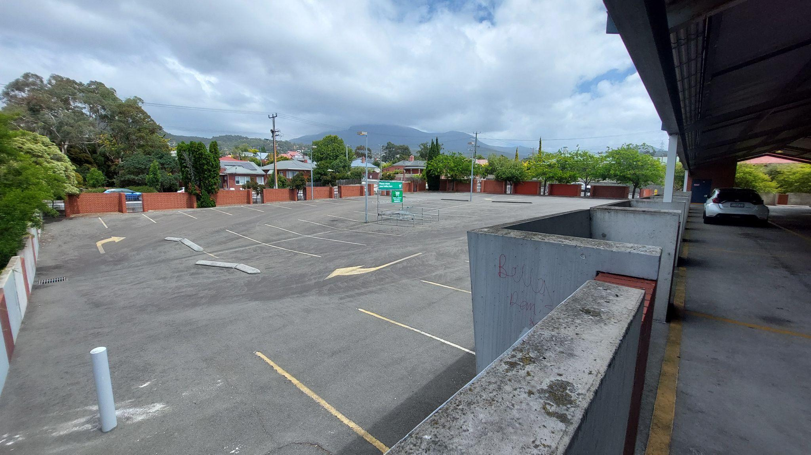
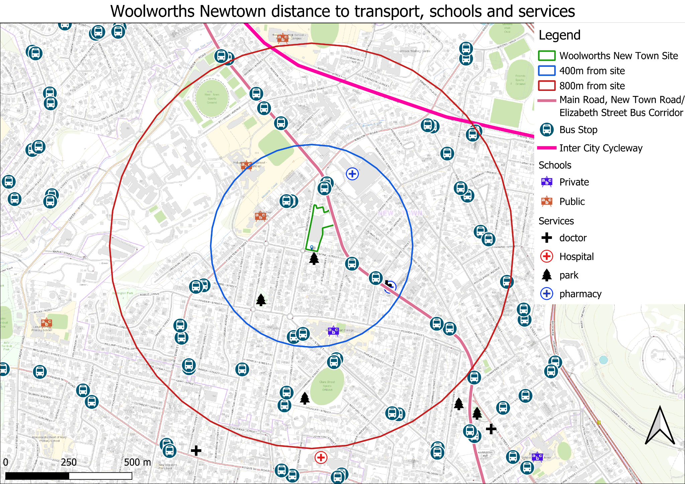
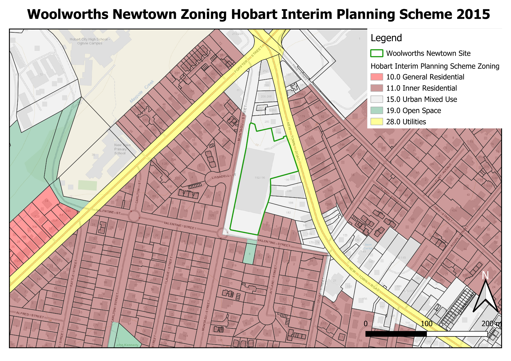
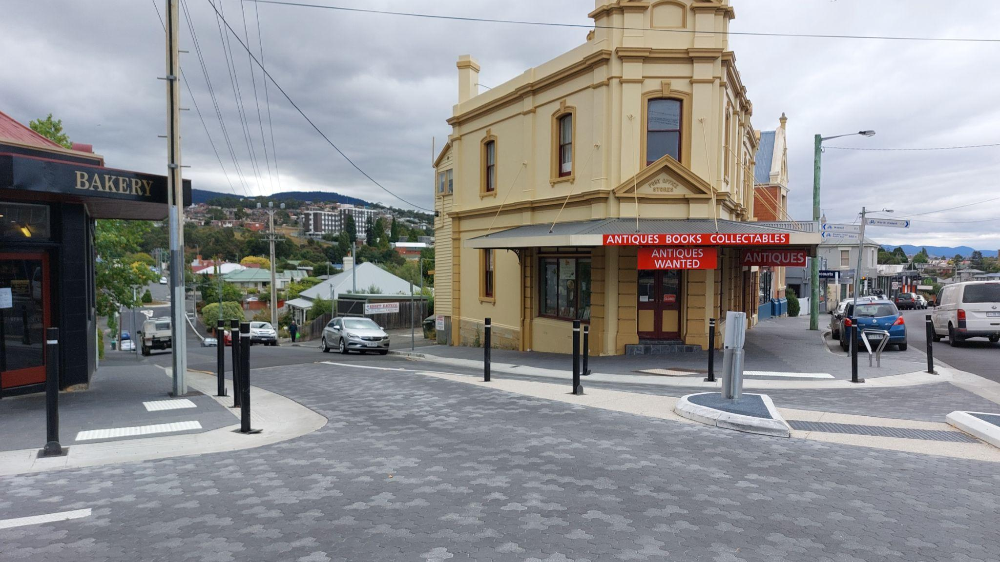
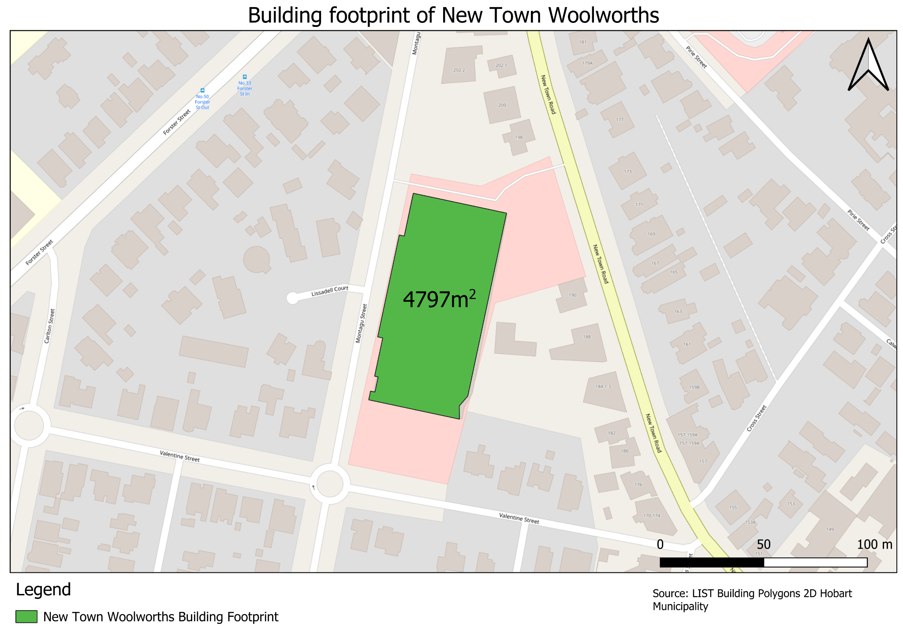
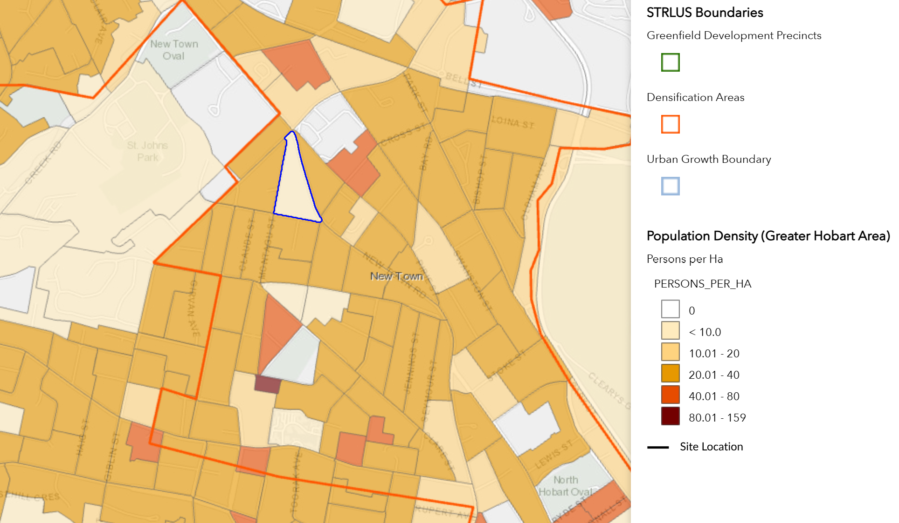

My local Woollies, Woolworths New Town is a great Woolies, it's the one my mum would always go to after picking me and my siblings from school, and it’s now my local Woolworths as I live in the nearby suburb of Mount Stuart. Woolworths Newtown is an example of severe over provision of car parking, resulting in poor land use in a prime location, close to services, shops, transport and housing. The supermarket has 248 dedicated car parking spaces on its site with further quasi dedicated on street parking along its facade along both Montagu and Valentine Street. Not only is this excessive, it is 88 more spaces than required to meet the acceptable solution in the applicable planning scheme, the Hobart Interim Planning Scheme.
The most underutilised area of this car park is the non-covered area on the corner of Valentine and Montagu street with 52 car parking spaces almost always completely not in use (Figure 1).
While this is a textbook example of excessive surface level car parking in a prime location for housing, it provides an exciting opportunity for redevelopment of this site of approximately 1600m2 (Source LISTMap).
Figure 1: Non covered parking area of approximately 1600m2 with 52 car parking spaces.
A great site for higher density housing is one close to frequent transport corridors to access job opportunities, close to existing amenities needed for everyday life such as schools, doctors, pharmacies, parks and of course supermarkets!
The site is perfect for higher density living, being on the busiest transport corridor in Hobart, with schools such as Sacred Heart College, New Town Primary, and both Hobart City High School campuses within a 20 minute walk of the site, with The Friends School and Lenah Valley Primary School not much further away (Figure 2).
Figure 2 - Schools, Services, and Transport available within 400 and 800m.
The busiest public transport corridor in Hobart, providing the highest frequency of service is the Main Rd/New Town Road/Elizabeth Street corridor that connects Glenorchy CBD and Hobart CBD. This corridor is easily accessible from the site with multiple bus stops within a 250 metre walking distance.
The 7am-9am peak provides for frequencies of approximately a bus every 10 minutes with 13 bus services lowering to a bus approximately every 12 minutes with 31 bus services between 9am - 3pm on weekdays (Department of State Growth, 2025).
Active transport is also a viable option of travel for the site with the Intercity cycleway less than 1km away providing a high quality cycling link to the Glenorchy, and Hobart CBDs.
Combine this with there being considerable amenities such as the nearby New Town Plaza and doctors within walking distance at the New Town Health Hub this is a fantastic location for housing with reduced car parking allocation.
Removing car parking provision for Woolworths Newtown and developing the underutilised site would have to comply with requirements of the relevant planning scheme the Hobart City Council Interim Planning Scheme 2015. Although this is the current planning scheme for this area, the Tasmanian Planning Scheme and Hobart Local Provisions Schedule will soon replace the Hobart City Council Interim Planning Scheme 2015 as the relevant planning scheme.
Property ID: 7659561
Titles: 127096 Folio 2
Planning Scheme: Hobart City Council Interim planning scheme 2015
Zone: Urban Mixed Use
Current use: Above ground car park.
Overlays: N/A
Specific Area Plan: Royal Hobart Hospital Helipad Airspace Specific Area Plan
Figure 3 - Zoning of Woolworths New Town site and surrounds.
Number of car parking spaces required to meet the Acceptable Solution: 159
Table 1 - Current and acceptable solution car parking allocation.
| Type | Current no. car parking spaces | Acceptable solution | Excess car parking spaces |
| Car parking spaces | 241 | 159 | 82 |
| Accessibility spaces | 4 | No Requirement | - |
| Family spaces | 3 | No Requirement | 3 |
| Direct to Boot spaces | 3 | No Requirement | 3 |
| Total | 251 | 159 | 88 |
The use class of Residential is a permitted use class in the Urban Mixed Use Zone.
Relevant Objectives of the zone
15.1.1.1 To provide for integration of residential, retail, community services and commercial activities in urban locations
15.1.1.2 To encourage use and development at street level that generates activity and pedestrian movement through the area.
15.1.1.5 To ensure development is accessible by public transport, walking and cycling
15.1.1.6 To provide for a diversity of uses at densities responsive to the character of streetscapes, historic areas and buildings and which do not compromise the amenity of surrounding residential areas.
15.1.1.7 To encourage the retention of existing residential uses and the greater use of underutilised sites as well as the reuse and adaptation of existing buildings for uses with a scale appropriate to the site and area.
Although the building height is limited at 10m for the Urban Mixed Zone in Acceptable Solution A1, there is opportunity for greater building height by addressing the performance criteria P1.
Performance criteria P1
Building height must satisfy all of the following:
As there are no desired future character statements for the Urban Mixed use zone or Specific Area Plans that are relevant to buildings of this scale, subclause (a) is not applicable.
The existing building on the site, has considerable bulk, with a flat facade, that dominates the streetscape along Montagu Street being like that of a long two storey building. Other nearby buildings are primarily one or two storey single family homes, with some examples of taller higher density buildings at 107 Montagu Street with a three storey multiple dwelling apartment building.
As the site is on the downward slope away from New Town Road at significantly lower ground level than that of the Heritage listed buildings in the New Town Road Heritage Precinct (NT4) (Figure 4).
Figure 4 - Site Viewed from corner of Cross and Valentine Street.
There is considerable buffer to extend beyond the maximum 10m building height addressing the performance criteria with potential 4 or 5 storeys at approximately, 16-23 metres tall could be applicable to the site.
Although a building of this height would cause significant shadowing, its location on a corner lot would mean that only the footpath on Valentine and Montagu Street would have significant shadowing and would largely not affect nearby residential buildings due to the orientation of the lot.
A2 : max building height within 10m of a residential zone must be no more than 8.5m
P2 building height within 10m of a residential zone must be compatible with the building height of existing buildings on adjoining lots in the residential zone.
As the building is on the corner of the urban mixed zone there is a buffer of over 10 metres across Valentine and Montagu Streets to the neighbouring Inner Residential Zone. There is an adjacent property at 7 Valentine Street within 10m zoned Inner Residential, however the building could be buffered from this property or use setbacks at certain heights to reduce the height of the building affecting this property.
Considerations should be made in regard to setbacks, design and residential amenity for a potential development of the site. Feasibility of how these provisions would affect a potential development should be considered at a later date.
Considering the current Woolworths New Town development as the use class of General Retail of hire (supermarket) requiring 1 car parking space for each 30m2 as outlined in Table e6.1 and the approximate 4797m2 area calculated from desktop LISTMap analysis the car parking spaces required for the supermarket is 159 Car Parks.
Figure 5 - Building footprint of New Town Woolworths.
It is important to stress that this is the number of car parks to meet the Acceptable Solution, flexibility is provided for reduced car parking provision through the Performance Criteria.
P1 The number of on-site car parking spaces must be sufficient to meet the reasonable needs of users, having regard to all of the following:
As established earlier, car parking demand in the non undercover area is low with the site rarely having more than one car use the area.
There is a significant amount of dedicated on-street car parking in the locality along Montagu Street and Valentine Street, including 3 dedicated accessible spaces for people with a disability. This area is often used as a preferential parking area for customers due to easier access in and out of the site from Montagu street than that of the often congested New Town Road, with a ramp providing direct pedestrian access to the supermarket.
As established earlier the site has multiple bus stops providing frequent service within a 400m walking distance of the site.
The likelihood of access to the site through other means of transport, be that of active transport is also highly likely considering the location within a residential area of relatively high density.
Figure 6 - Density surrounding the Woolworths Site (Department of State Growth, n.d.)
The location also falls within the Southern Tasmania Regional Land Use Strategies (STRLUS) densification areas, with the site's location having a density of 4.3 person per hectare much lower than the minimum target of 25 persons per hectare identified in the STRLUS.
It is therefore easy to conclude that reduction in car parking spaces below the acceptable solution of 159 car parking spaces for New Town woolworths is applicable.
Although on paper transforming this site into one for housing or a mixed use residential development looks straightforward, there are a number of potential issues that could halt progress.
Although the site is not within a heritage precinct, it is adjacent to two heritage precincts including; Heritage Number: NT4. Heritage Area: New Town Road, and Heritage Number: NT3. Heritage Area: Forster Street. As established previously as the site is located downhill from the New Town Road Heritage Area, building height would have to be considerable to have any visual impacts that detract from the Heritage Values of the New Town Road Precinct.
You only have to go less than a kilometre up the road to find an example of higher density housing at Sunnyside Road, where after lengthy legal appeals a neighbour was able to weaponise the planning and court system to deny 22 homes for people in need. The Tasmanian planning system gives a huge amount of power to adjoining property owners, any development of this scale is likely to face scrutiny and become politicised. However there is potential to remedy this by consulting with neighbours and the greater community first, nobody likes the first notification that something is happening in their area to be a letter in the mail saying a development application notice is going to be put on their front fence.
Building medium density housing on and around supermarket developments is not something new for Woolworths with significant developments proposed at supermarket sites in Melbourne, Sydney and Brisbane (Dorrington, 2023). These include a 124 apartment mixed use development in the suburb of Waterloo, Sydney, and an 139 apartment project in Elsternwick in Melbourne (Dorrington, 2023). The advantage of these developments for the supermarket is that they provide for confirmed customers who are not going to need to use the parking facilities at the supermarket with a high likelihood that residents of the development would use the supermarket.
The Woolworths New Town site provides the opportunity for much needed well located medium density housing, close to transport, shops, services and schools and undo some of the wrongs of over allocation of land to the storage of the private car in Hobart and specifically this site. Within the current planning context, the possibilities for residential or mixed use development for the area on the corner of Montagu and Valentine Street are significant, with no serious impediments that may limit development opportunity. Finally this is an example of a type of development that has shown to be successful and popular for other supermarkets around Australia, with there no reason that a mixed use residential development would not succeed here in New Town.
Department of State Growth. (2025). GTFS Data. Available at:
https://www.transport.tas.gov.au/public_transport/gtfs-data [Accessed 4 Feb. 2025].
Department of State Growth. (n.d.). Population Density, ArcGIS Web Application. [online] Available at: https://maps.stategrowth.tas.gov.au/portal/apps/webappviewer/index.html?id=57dd7518745e4699bf874a64c011d296.
Dorrington, B. (2023). The supermarket wars move to housing: Why Coles and Woolworths are building units. [online] www.realcommercial.com.au. Available at: https://www.realcommercial.com.au/news/bread-milk-a-new-home-why-supermarket-giant-woolworths-is-developing-apartments [Accessed 4 Feb. 2025].
Opinions expressed are my own and do not represent that of my employer.